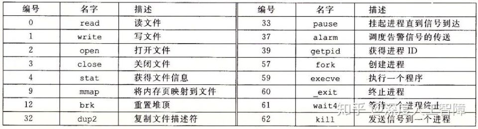
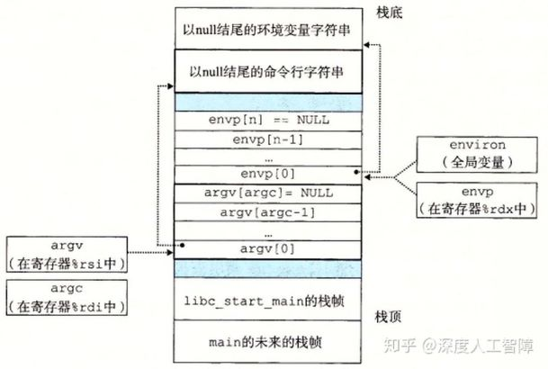
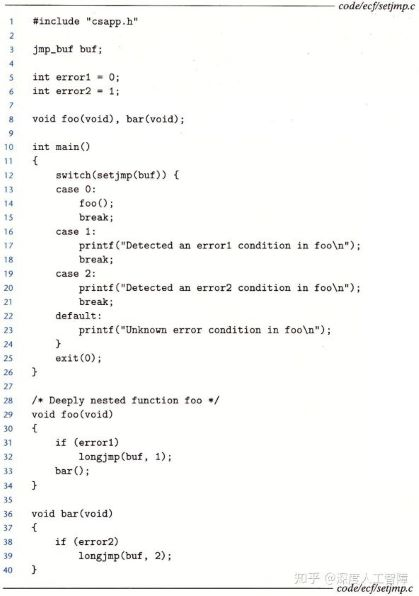
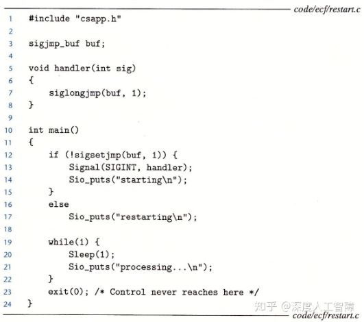

处理器上电后，PC就假定一个序列a0, a1,..., an-1，其中ak是指令Ik的地址。 从ak转变到ak+1的过程称为控制转移（Control Transfer），将控制转移序列称为控制流（Flow of Control或Control Flow）。 当每个Ik与Ik+1的地址在内存是相邻的，则称该控制流是平滑（smooth）的，否则存在突变（abrupt change），比如分支跳转或函数调用。
系统会通过使控制流发生突变，来对系统状态的变化做出反应，比如必须处理硬件定时器定期产生的信号、必须将到达网络适配器的数据包存放在内存等等。 这种突变称为异常控制流（Exceptional Control Flow，ECF）。而一次异常（exception）就是指一个突变。ECF存在不同的层次：
于是本章的关键词有：
在计算机开机后，操作系统分配并初始化了一个叫做异常表（exception table）的跳转表，异常表中的条目k存放着该异常的异常处理程序的地址。 在运行中，如果处理器检测到了处理器状态（state）的改变（称为事件event），那么处理器会决定它的异常，并通过异常表来调用相应的异常处理程序。 当异常处理器处理完后，程序可能回到发生异常的当前指令，或者回到下一指令，或者直接异常退出。
每一种异常都有唯一的非负异常号（exception number）。异常表的起始地址保存在特殊的CPU寄存器中，称为异常表基址寄存器（Exception Table Base Register）。 当处理器检测到有事件发生时，并确定了异常号k时，就会通过异常号确定偏移量。比如在64位系统中，内存地址为8字节，则偏移量为8k字节。 处理器接着通过异常表基址寄存器保存的异常表起始地址，加上偏移量来得到异常处理程序的内存地址，然后跳转到对应的异常处理程序。
异常有以下几点不同于过程调用（procedure call，就是chapter3中的call）：
可以看出，异常由处理器检测，再由内核来处理。因此说异常位于硬件和操作系统交接的部分，由硬件和操作系统共同实现。下面进一步讨论四类异常。
| Class | Cause | Async/sync | Return behavior |
|---|---|---|---|
| Interrupt | Signal from I/O device | Async | Always return to next instruction |
| Trap | Intentional exception | Sync | Always return to next instruction |
| Fault | Potentially recoverable error | Sync | Might return to current instruction |
| Abort | Nonrecoverable error | Sync | Never return |
其中，异步(asynchronous)异常是由于处理器外部发生的状态变化而引起的，而同步(synchronous)异常指的是当前指令运行的结果。
在Linux/x86-64中，一共有256种不同的异常，其中0~31号异常是由Intel架构师定义的异常，32~255号异常是由操作系统定义的中断和陷阱。几个比较特殊的如下所示
| Exception number | Description | Exception class |
|---|---|---|
| 0 | Devide error | Fault |
| 13 | General protection fault | Fault |
| 14 | Page fault | Fault |
| 18 | Machine check | Abort |
| 32~255 | OS-defined exceptions | Interrupt or trap |
中断异常是由处理器外部的I/O设备信号触发的，不是由指令造成的。I/O设备通过向处理器芯片上的中断引脚发送信号，并把异常号放在系统总线上，来触发中断。 当当前指令执行完后，处理器发现中断引脚的电压变高，就从系统总线中获取异常号，然后调用对应的中断处理程序（Interrupt Handler），执行完毕后返回执行下一条指令。 I/O设备如网络适配器、磁盘控制器和定时器（timer）都会引起中断。
操作系统内核为程序提供各种服务，但是你的程序没有直接访问内核的权限，无法调用内核函数以及访问内核数据。 因此在用户程序和内核之间提供一个类似函数的接口，称为系统调用（system call），用户会通过执行系统调用来向内核请求服务。 比如读取文件（read）、创建新进程（fork）、加载程序（execve）或终止程序（exit），所以陷阱异常是一个有意的（intentional）异常。
处理器提供了syscall n指令来允许用户程序请求服务n。陷阱处理程序（trap handler）就可以通过寄存器传递的参数（比如%rax存储syscall的n）来处理该陷阱。 C程序中也可以通过syscall函数来直接使用系统调用。然而大家更多会去使用C标准库里的包装函数（wrapper function），如下图所示。这里将系统调用和对应的包装函数称为系统级函数（system-level function）。

从程序员角度来看，系统调用和函数调用一样，但是两者存在巨大的区别。系统调用运行在内核模式，而函数调用运行在用户模式。
故障异常由错误引起的。当发生故障时，处理器将控制转移给故障处理程序（fault handler），如果处理程序能修复故障，则重新执行引发中断的当前指令，否则处理程序返回到内核的abort例程，终止应用程序。
举例来说，在Linux/x86-64下，当应用尝试除以0时，会出现除法错误（异常0），Linux不会尝试从除法错误中恢复，而是直接终止程序，而Linux shell通常会吧除法错误报告为浮点异常（Floating Exception）。 造成一般保护故障（异常13）的原因有很多，通常是因为程序引用了一个未定义的虚拟内存区域，或者程序试图写一个只读文件，Linux不会尝试恢复这类故障，shell中会将其报告为段故障（Segmentation Fault）。 遇到缺页异常（异常14），处理器会将适当的磁盘上的虚拟内存的一个页面映射到物理内存的一个页面，然后重新执行产生故障的指令。
终止异常通常是不可修复的错误造成的，通常是硬件错误，终止处理程序（abort handler）会直接将控制返回一个abort例程，终止应用程序。
比如在Linux/x86-64中，机器检查异常（异常18）是在导致故障的指令中检测到致命的硬件错误。
异常是允许操作系统内核提供进程（Process）概念的基本构造块。
进程的经典定义是一个执行中程序的实例(an instance of a program in execution)。 每个程序都会运行在某个由内核维护的进程上下文（Context）中。上下文包含了保证程序正确运行所需的状态，包括存放在内存中的程序的代码和数据、栈、通用目的寄存器的内容、程序计数器、环境变量等等。 当我们执行可执行文件时，shell会先创建一个新的进程，给程序提供自己的上下文，然后再在该进程的上下文中运行这个可执行目标文件。
进程的出现，给我们提供了一种假象——我们的程序独占地使用处理器和内存。实际上这种假象是由逻辑控制流和私有地址空间提供的。
当我们单步执行程序时，可以看到一系列PC值，这个PC序列就称为逻辑控制流(logical control flow)，简称逻辑流(logical flow)。 注意：之前“处理器上电后，PC就假定一个序列a0, a1,..., an-1，其中ak是指令Ik的地址”中的控制流的是物理控制流，是在系统层次上的指令地址序列，而逻辑控制流是在程序级别上的，所以物理控制流包含逻辑控制流。
如上图所示，一个物理控制流被分成了三个逻辑控制流。每条竖线代表着一个进程的逻辑控制流的一部分。三个逻辑流交错进行，轮流使用处理器。 当一个进程执行了一部分逻辑流时，就会被别的进程抢占（Preempted）。但是从单个进程的角度来看，它的逻辑流是连续的，这便提供了独占处理器的假象。
一些概念需要明确：
进程为每个程序提供了自己的私有地址空间(private address space)，其他进程不能读或写该地址空间中的内存字节。如下是一个私有地址空间的架构：

处理器为进程提供了两种模式，用户模式和内核模式，处理器通过某个控制寄存器的模式位（Mode Bit）来进行切换
进程初始是为用户模式，当出现异常（中断、陷阱、故障）时会变为内核模式，并跳转到异常处理程序中，当返回应用程序时，又会改回用户模式。 为了处于用户模式的进程能访问内和数据结构的内容，Linux提供了/proc文件系统。
我们知道内核为每个进程维护了一个上下文，包含了进程所需的所有信息。 当进程执行出现中断或某些异常时，内核中的调度器（Scheduler）会决定抢占当前进程，并重新开始一个之前被抢断了的进程。 此时就需要进行上下文切换（Context Switch），将当前进程的上下文切换成要运行的进程的上下文。 比如系统级函数read要从硬盘中读取数据，内核可能进行上下文切换来运行其他程序。 再比如每次定时器中断异常发生后。内核都可以决定要不要进行上下文切换。 上下文切换主要包含以下步骤：
一个更加具体的例子如下：

首先内核开始执行进程A，处于用户模式。当进程A调用了read系统调用时，内核中的陷阱处理程序请求来自磁盘控制器的DMA传输，并且安排磁盘在完成数据传输后中断处理器。 由于磁盘读取数据比较耗时，所以调度程序决定运行进程B。在上下文切换的过程中，内核先以内核模式代表进程A运行一些指令，再代表进程B运行一些指令。完成切换后，内核再在用户模式下运行进程B。 当磁盘控制器完成从磁盘到内存的数据传输后，磁盘会发起中断。此时内核判断进程B已运行了足够长的时间了，就会从进程B切换到进程A，直到下次异常出现。
当Unix系统级函数遇到了错误，通常会返回-1，并设置全局整型变量errno的值。为了代码的整洁，csapp写了许多包装函数来检测错误，并将其首字母大写。 如能检测错误的fork()版本为Fork()。下面是Fork()函数代码：
void unix_error(char *msg)
{
fprintf(stderr, "%s: %s\n", msg, strerror(errno));
exit(0);
}
pid_t Fork(void)
{
pid_t pid;
if((pid = fork()) < 0)
unix_error("Fork error");
return pid;
}
stderr向屏幕输出错误信息。strerror将整型errno翻译为其代表的错误。pid_t是pid的数据类型。在type.h中定义为int。
每个进程都有一个唯一的正数进程ID（PID）。可以通过getpid函数返回当前进程的PID，通过getppid函数返回创建当前进程的父进程PID。 PID的数据类型都为pid_t，Linux系统中在type.h中定义为int。
#include <unistd.h> #include <sys/types.h> pid_t getpid(void); pid_t getppid(void);
在一个程序员看来，进程会处于以下三种状态之一：
#include <stdlib.h> void exit(int status);
其中，status表示进程的退出状态。
#include <unistd.h> #include <sys/types.h> pid_t fork(void);
当调用fork函数时，就立即以当前进程作为父进程，创建一个新的子进程，具有以下特点：
当一个进程终止后，内核并不会立即将其从系统中移除。相反，进程一直会保持终止状态，直到被它的父进程回收（reap）。当父进程回收子进程时，子进程会把它的退出状态返回给父进程，然后消失。 那些终止但未被回收的进程叫做僵尸进程（zombie）。如果父进程终止了，但是子进程没有被回收，内核会调用init进程来回收这些子进程。因为僵尸进程会占据内存资源，主动回收子进程是有必要的。
可以通过waitpid函数来回收子进程。函数原型如下：
#include <sys/types.h> #include <sys/wait.h> pid_t waitpid(pid_t pid, int *statusp, int options);
注意：当父进程创造了许多子进程，这里通过pid=-1进行回收时，子程序的回收顺序是不确定的，并不会按照父进程生成子进程的顺序进行回收。 可通过按顺序保存子进程的PID，然后按顺序指定pid参数来消除这种不确定性。
如果statusp非空，则waitpid函数会将子进程的状态信息放在statusp中，可通过wait.h中定义的宏进行解析。如下：
如果当前进程没有子进程，则waitpid返回-1，并设置errno为ECHILD，如果waitpid函数被信号中断，则返回-1，并设置errno为EINTR。否则返回被回收的子进程PID。
调用wait(&status)等价于调用waitpid(-1, &status, 0)
#include <unistd.h> unsigned int sleep(unsigned int secs); int pause(void);
sleep函数将进程挂起一段时间，而该函数的返回值为剩下的休眠时间。
pause函数将进程挂起，直到该进程收到一个信号。pause永远返回-1。
#include <unistd.h>
int execve(const char *filename, const char *argv[],
const char *envp[]);
execve函数可在当前进程的上下文中加载并运行一个程序。 execve函数加载并运行filename可执行目标文件，参数列表argv和环境列表envp是以NULL结尾的字符串指针数组，其中argv[0]为文件名。 调用exevec函数其实就是调用加载器，则加载器会在可执行目标文件filename的指导下，将文件中的内容复制到代码段和数据段，再调用_libc_start_main来初始化执行环境，调用main函数，main函数的函数原型如下所示
int main(int argc, char *argv[], char *envp[]);
其中，argc为参数数目，argv为参数列表，envp为环境列表。其用户栈的架构如下所示

这里还有一些函数用来对环境变量进行操作
#include <stdlib.h>
//获得名字为name的环境值
char *getenv(const char *name);
//对环境值进行修改
int setenv(const char *name, const char *newvalue,
int overwrite);
// 删除环境变量
int unsetenv(const char *name);
shell是指一种交互性的应用程序，能够代表用户运行程序。若输入的最后一个参数是一个&，那么程序将在后台（background）执行，否则在前台执行。 前台执行要求shell等待它的结束，后台执行则等待它的结束。csapp写了一个简易的没有回收子进程的shell，这里略去，主要就是利用fork创建新进程，execve在该进程运行程序。
我们已经看到了硬件和软件如何协作来提供基础低层次的异常机制。我们还看到了操作系统如何利用异常来支持名为进程上下文切换的异常控制流。 接下来我们将研究一种更高层次的软件形式的异常，称为Linux信号。信号允许进程和内核中断其他进程。
信号就是一条小消息，可以通知系统中发生了一个某种类型的事件。内核中异常处理程序处理低层次的硬件异常往往是对用户进程是不可见的，但是可以通过给用户进程发送信号的形式来告知。 比如除零错误就发送SIGFPE信号，执行非法指令就发送SIGILL信号，子进程终止内核就发送SIGHLD到父进程中，则此时父进程就能对该子进程调用waitpid来进行回收。 再如输入Ctrl+C，内核会发送SIGINT信号给前台作业；输入Ctrl+Z，内核会向前台作业发送SIGTSTP信号，默认停止作业，可通过发送SIGCONT信号来恢复该作业。
Linux系统支持以下30种信号：

接下来逐一分析发送信号、接收信号、阻塞信号以及信号处理程序。
Unix基于进程组（Process Group）的概念，提供了大量向进程发送信号的机制。 进程组由一个正整数进程组ID来标识，每个进程组包含一个或多个进程，而每个进程都只属于一个进程组，默认父进程和子进程属于同一个进程组。 我们将shell为了对一条命令行进行求值而创建的进程称为作业（Job）。比如输入ls | sort命令行，就会创建两个进程，分别运行ls程序和sort程序，这两个进程通过Unix管道连接到一起，由此就得到了一个作业。注意：
这里提供了以下对进程组的操作，允许你可以同时给一组进程发送信号。
#include <unistd.h> pid_t getpgrp(void); //返回所在的进程组 int setpgip(pid_t pid, pid_t pgid); //设置进程组
程序/bin/kill具有以下格式
/bin/kill [-信号编号] id
当id>0时，表示将信号传递给PID为id的进程；当id<0时，表示将信号传递给进程组ID为|id|的所有进程。 比如linux> /bin/kill -9 15213 是把信号9（SIGKILL）发送给进程15213。 之所以用完整路径/bin/kill是因为一些Unix shell有内置的kill命令。
通过键盘上输入Ctrl+C会使得内核发送一个SIGINT信号到前台进程组中的所有进程，终止前台作业； 通过输入Ctrl+Z会发送一个SIGTSTP信号到前台进程组的所有进程，停止前台作业，直到该进程收到SIGCONT信号。
#include <sys/types.h> #include <signal.h> int kill(pid_t pid, int sig);
当pid>0时，会将信号sig发送给进程pid；当pid=0时，会将信号sig发送给当前进程所在进程组的所有进程； 当pid<0时，会将信号sig发送给进程组ID为|pid|的所有进程。
#include <unistd.h> unsigned int alarm(unsigned int secs);
当alarm函数时，会取消待处理的闹钟，返回待处理闹钟剩下的时间，并在secs秒后发送一个SIGALARM信号给当前进程。
当内核把进程p从内核模式切换回用户模式时，比如从系统调用返回或完成了一次上下文切换时，会检查进程p的未被阻塞的待处理信号的集合，即pending & ~blocked。 如果是空集合，则内核会将控制传递给p的逻辑流中的下一条指令；如果集合非空，则内核会选择集合中编号最小的信号k，强制进程p采取某些行为来接收该信号。 对该集合中的所有信号都重复这个操作，直到集合为空。此时内核再将控制传递回p的逻辑流中的下一条指令。
每种信号类型具有以下一种预定的默认行为：
我们这里可以通过signal函数来修改信号的默认行为，但是无法修改SIGSTOP和SIGKILL信号的默认行为
#include <signal.h> typedef void (*sighandler_t)(int); sighandler_t signal(int signum, sighandler_t handler);
typedef定义了一种sighandler_t类型,它是一种函数指针，指向的函数接受一个整型参数并返回一个无类型指针。signum为信号编号，可以直接输入信号名称，如SIGINT等。handler为我们想要对信号signum采取的行为，有以下三种：
例子：
#include "csapp.h"
void sigint_handler(int sig)
{
printf("Caught SIGINT!\n");
}
int main()
{
if(signal(SIGINT, sigint_handler) == SIG_ERR)
unix_error("signal error");
pause(); //wait for the receipt of a signal
return 0;
}
默认情况下键盘输入Ctrl+C后，进程会捕获信号SIGINT，它的默认行为是立即终止进程。在上面的例子中，我们修改了默认的行为，先输出一条信息，再终止。 通常来说，install一次handler后，以后的默认行为都会改变，但是旧的Unix系统在改变一次行为之后会再次恢复默认行为。
Linux提供阻塞信号的隐式和显示的机制：
#include <signal.h>
int sigprocmask(int how, const sigset_t *set,
sigset_t *oldset);
这里还提供一些额外的函数来对set信号集合进行操作
#include <signal.h> //初始化set为空集合 int sigemptyset(sigset_t *set); //把每个信号都添加到set中 int sigfillset(sigset_t *set); //将signum信号添加到set中 int sigaddset(sigset_t *set, int signum); //将signum从set中删除 int sigdelset(sigset_t *set, int signum); //如果signum是set中的成员，则返回1，否则返回0 int sigismember(const sigset_t *set, int signum);
以下是一个使用例子
sigset_t mask, prev_mask; Sigemptyset(&mask); Sigaddset(&mask, SIGINT); /* Block SIGINT and save previous blocked set */ Sigprocmask(SIG_BLOCK. &mask, &prev_mask); . . //Code region that will not be interrupted by SIGINT . /* Restore previous blocked set, unblocking SIGINT */ Sigprocmask(SIG_SETMASK, &prev_mask, NULL);
以上执行内部函数时，就不会接收到SIGINT信号，即不会被Ctrl+C终止。可以通过阻塞信号来消除函数冲突，或者保证程序运行逻辑正确。
接下来csapp花了许多笔墨讨论如何写安全、正确以及可移植性好的信号处理程序。然后再讨论了如何利用阻塞信号来解决处理程序和主程序并发运行造成的错误。 这些细节还是要等自己写个shell摸索摸索，这里就略去。
C语言提供了一种用户级异常控制流形式，称为非本地跳转（Nonlocal Jmup）。 它可以直接将控制从一个函数转移到另一个当前正在执行的函数，不需要经过调用-返回。
这里需要两个函数
#include <setjmp.h> int setjmp(jmp_buf env); void longjmp(jmp_buf env, int retval);
setjmp函数把当前的调用环境存在env中，并且返回0。调用环境包括PC、栈指针和通用目的寄存器。 然后我们在代码某处调用longjmp(env, retval)，会从env中恢复调用环境，并跳转到最近一次初始化env的setjmp函数，让setjmp函数返回retval，longjump函数没有返回值。
注意：setjmp的返回值不能赋给变量（for subtle reason beyond our scope），但是可以作为switch的条件。
接下来介绍非本地跳转的两个应用

首先在12行中执行setjmp(buf)函数将当前调用环境保存到buf中，并返回0，所以就调用foo函数。如果foo函数出现了error1错误，则通过longjmp(buf, 1)恢复调用环境，并跳转回第13行，后让setjmp函数返回1，进入case1。 如果没有出现error1错误，但是foo函数接下来调用的bar函数出现了error2错误，则通过longjmp(buf, 2)恢复调用环境，并跳转回第13行，然后让setjmp函数返回2，进入case2。 由此就无需解析调用栈了。但是该方法可能存在内存泄露问题。
在信号处理中也有对应的两个非本地跳转的函数
#include <setjmp.h> int sigsetjmp(sigjmp_buf env, int savesigs); void siglongjmp(sigjmp_buf env, int retval);
注意：当sigsetjmp函数中savesigs非零时，当前的pending和blocked位向量才会存在env中。其余与setjmp和longjmp类似。

首先第12行通过sigsetjmp函数将调用环境保存到buf中，并返回0，随后设置信号处理程序。 当用户输入Ctrl+C时，会调用信号处理程序handler，并通过siglongjmp恢复调用环境，然后跳转回第12行。 再让sigsetjmp返回1。这便避免了返回到中断的下一条指令处。
程序运行结果类似于：
linux> ./restart starting processing... processing... processing... Ctrl+C restarting processing...
PS：图中的Sio_put函数是csapp.h中定义的一个安全的输出函数。没错printf不安全。。。